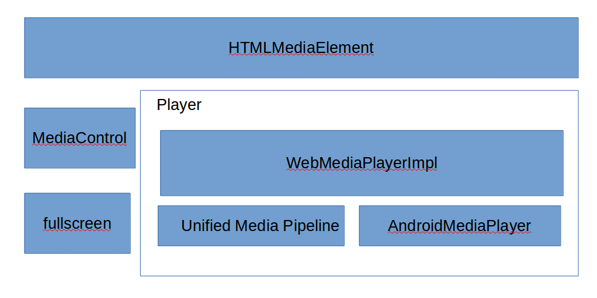
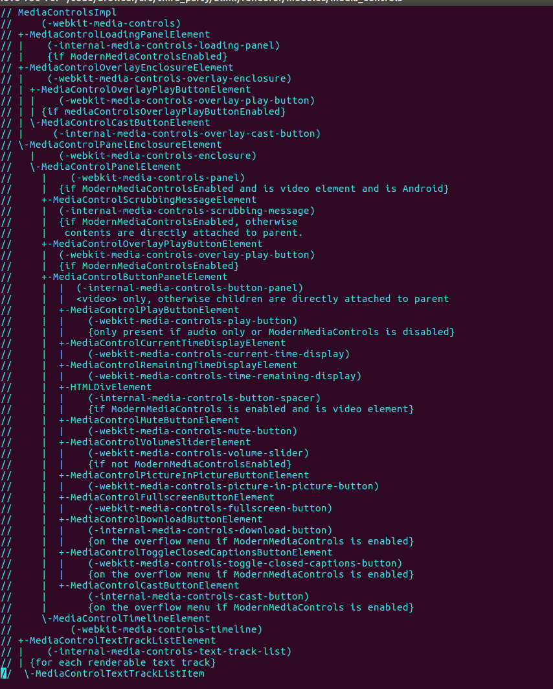
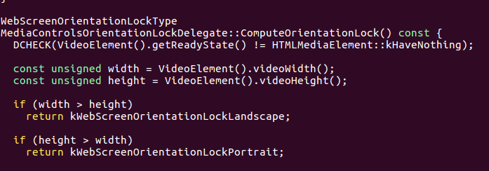
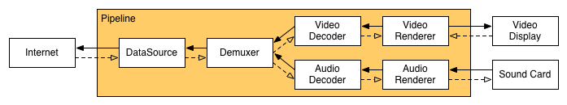

B002：media
media模块大量参考老罗的博客：https://blog.csdn.net/Luoshengyang/。
媒体播放是浏览器一个重要的功能，媒体的模块的基础设施如下图：

1、HTMLMediaElement是w3c标准video/audio标签的具体实现,HTMLMediaElement有两个子类，HTMLVideoElement和HTMLAudioElement，分别为video、audio。每一个<video>/<audio>创建一个HTMLMediaElement节
点。HTMLMediaElement负责穿件mediacontrol和mediaplayer，并且发布js接口(媒体专有js接口可以在HTMLMediaElement.idl文件中查看)。
2、MediaControl包含若干video/audio的内置元素，负责和用户交互。Mediacontrol的元素都是继承与HTMLDivElement，我们平时看到的播放按钮，进度条等都是一个个按照规律排放的div块。了解Mediacontrol可以定制播放界面，
目前市场常用的浏览器比如qq，uc都定制了自己的播放器UI。mediacontrol的结构如下图。笔记本屏幕较小，没有全部截全部，可看media_control_impl.cc。

3、fullscreen是实现全屏功能的模块。video全屏功能是HTMLMediaElement中调用FUllScreen::RequestFullscreen方法实现。视频全屏过程在老罗的博客有详细的介绍。补充一点，全屏过程中的旋转规则：
a、videoWidth > videoHeight，全屏时横屏；
b、videoWidth < videoHeight，全屏时竖屏；
c、videoWidth = videoHeight， 不变。
代码实现逻辑在media_controls_orientation_lock_delegate.cc中。

4、Player,媒体播放播放器。这个是播放的核心，也是最复杂的模块。
